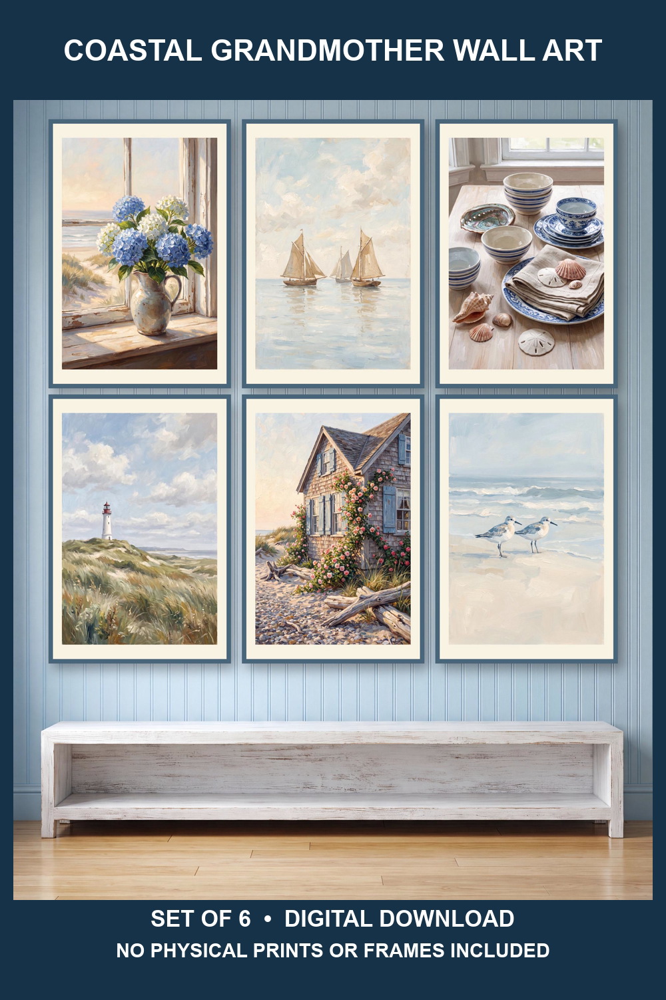

Michigan cottage and lake house decorating guide
Up North Cottage Wall Art for a Relaxed Lake House

An Up North cottage gallery wall should feel collected but calm. Start with one visual story—lake water, sailboats, hydrangeas, shorebirds, and weathered coastal details—then repeat a restrained frame finish so the room feels intentional rather than themed from corner to corner.
Choose a six-print layout for the room
Above a sofa, console, or dining bench, arrange six prints in a two-by-three grid. Use equal frame sizes and consistent gaps for a clean lake-house look. Above a bed, a wider three-by-two layout can echo the headboard. In a stair landing or narrow hall, divide the collection into two vertical groups of three.
Before hanging, trace each frame onto kraft paper and tape the templates to the wall. This lets you check the total footprint and sightline without making extra holes. Keep the center of the arrangement near eye level, then adjust for furniture below it.
Build a Michigan lake-house palette
Soft blue, navy, warm white, faded green, and natural wood work well in cottages and cabins because they connect indoor rooms with water and shoreline views. Natural oak frames feel casual; slim white frames keep a small guest room bright; matte black frames add contrast in a more modern cabin.
Avoid adding too many nautical objects around the artwork. Let textiles and useful furnishings carry the supporting colors: a blue throw, woven basket, linen pillow, or small ceramic lamp is usually enough.
Size and print digital cottage artwork
Measure the wall and frames before selecting files. For a six-piece grid, include the gaps between frames in the overall width. Use the file ratio intended for each frame instead of stretching or cropping the art. For paper choice, matte stock reduces glare in bright lake rooms, while a professional print service can help with larger formats.
Review the printable wall art printing guide before ordering prints, and use the digital download help page for file access and setup guidance.
Shop the coordinated cottage collection
The featured Etsy collection groups six complementary coastal cottage designs into one digital set, making it easier to create a unified wall without sourcing each image separately.
View the Coastal Cottage Art Set on Etsy
Instant digital download only. No physical prints, frames, furniture, or decor are shipped. Review the Etsy listing for the exact files and sizes currently included.
Up North cottage wall art FAQ
What wall art works in an Up North cottage?
Lake, shoreline, sailboat, hydrangea, and shorebird artwork supports a relaxed cottage atmosphere. A coordinated set keeps the room cohesive while still giving each frame a distinct subject.
How should six cottage prints be arranged?
Use a two-by-three grid above a sofa or console, a wider three-by-two arrangement above a bed, or two vertical trios in a narrow area. Repeat frame sizes, finishes, and spacing.
Is a physical product shipped?
No. The featured collection is a digital download. Physical prints and frames are not included or shipped.
For related room ideas, visit the coastal cottage decorating guide, compare layouts in the printable gallery wall guide, or explore blue hydrangea and sailboat wall art.